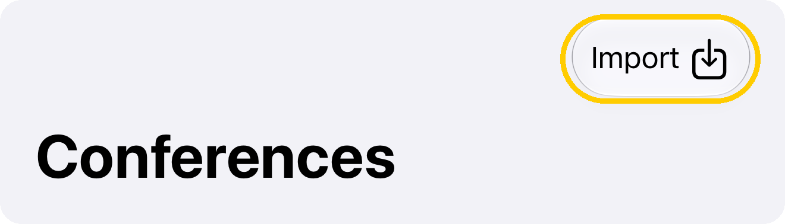
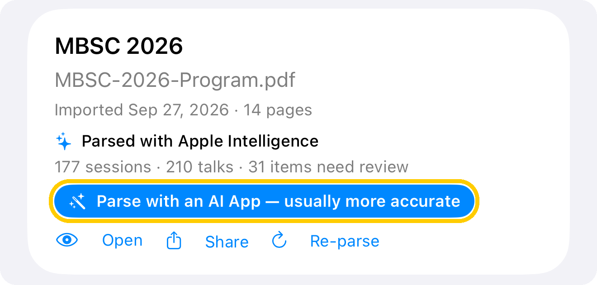
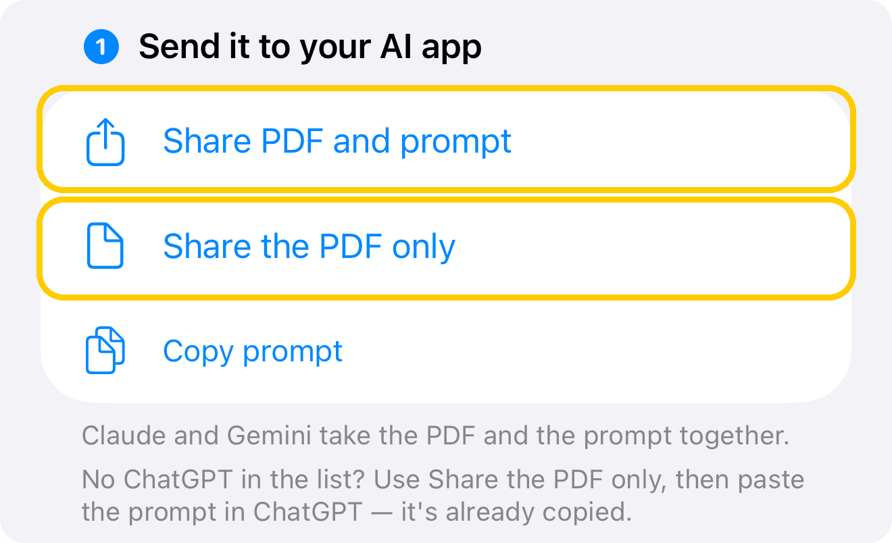
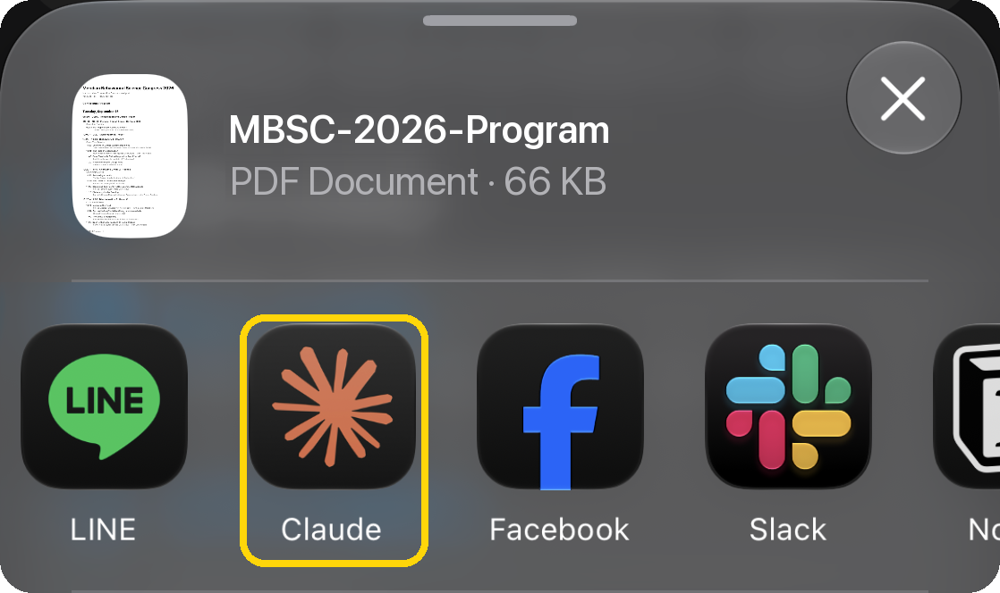
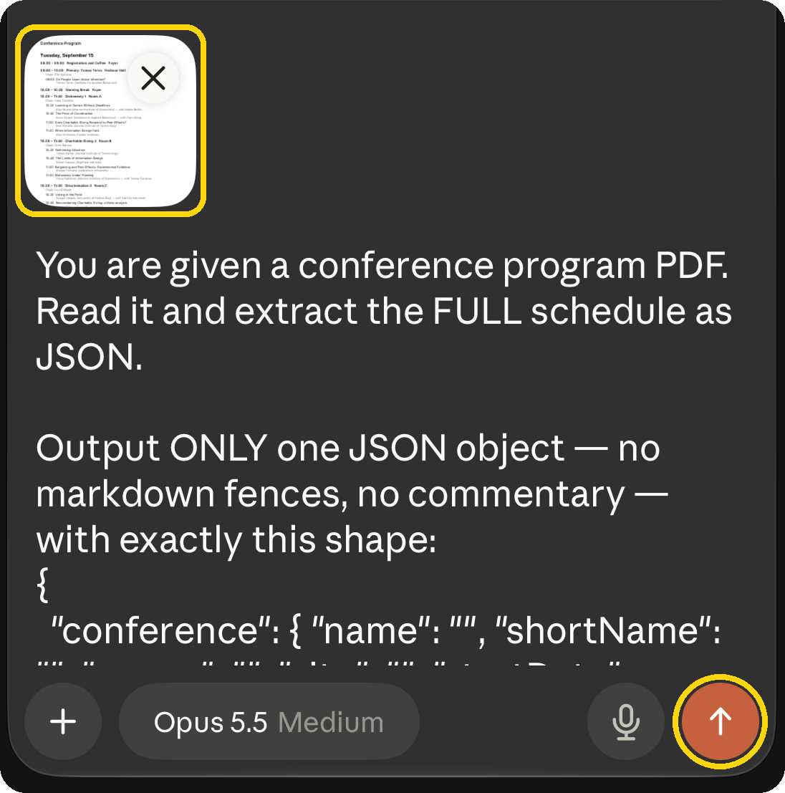
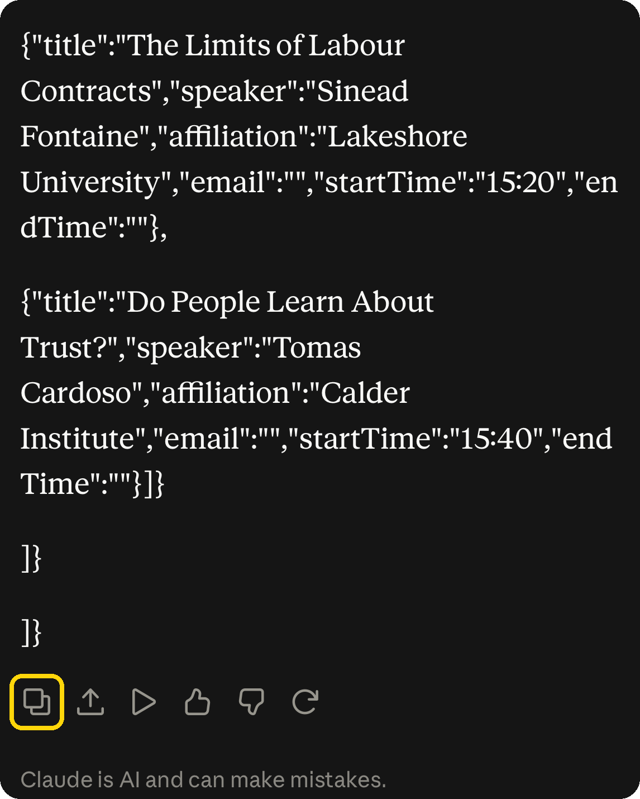
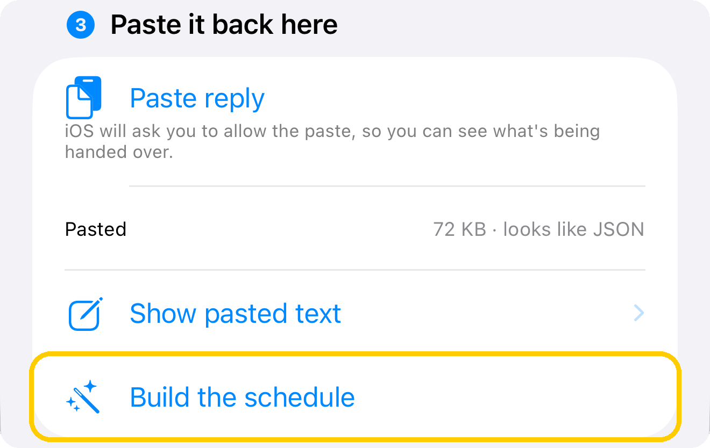
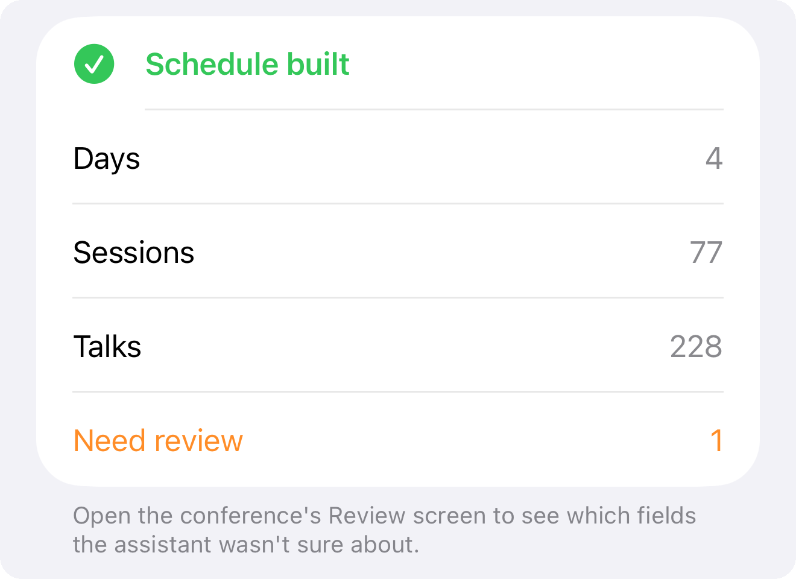

ACADENDA / PERSONAL USE · PDF IMPORT
Turn a program PDF into your schedule
Import a conference PDF to build your own schedule. If automatic parsing is incomplete, follow the steps below to get help from an AI app.
Screenshots use Claude and a fictional MBSC 2026 program. Select any screenshot to view the full image.
When using AI assistance, you send the PDF to your chosen AI service. Acadenda does not send it for you.
Import the program PDF
On the Conference tab, tap Import at the top right, then ＋, and choose the organiser's program PDF. Acadenda parses it once on its own.

Open “Parse with an AI App”
When parsing finishes, tap Parse with an AI App under the PDF. If the built-in parser was used or the result looks thin, the button is right there in blue.

Send the PDF and prompt
Tap Share PDF and prompt and pick your AI app. The PDF is attached, the prompt goes in as the message, and the prompt is copied as well. Using ChatGPT? Tap Share the PDF only instead — ChatGPT doesn't appear when the prompt is shared with the PDF.


Send in your AI app
Check that both the PDF and the prompt are in the message box, then send. If only the PDF arrived — as it does with ChatGPT — paste the prompt into the message box.

Copy the AI reply
The AI replies with a long block of JSON — you don't need to read it. When it finishes, use the Copy button under the reply. If it stops partway, type “continue” and copy all of it.

Paste and build the schedule
Back in Acadenda, tap Paste. You'll see the size of the reply and “looks like JSON”. Then tap Build the schedule.

Check the results
You'll see how many days, sessions and talks were found. Anything marked Needs review can be checked against the original PDF on the conference's Review screen.
